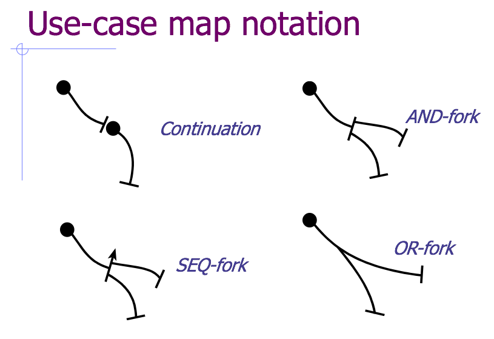

Use Case Maps Revisited
Back when I was struggling to teach a meaningful course on software architecture at the University of Toronto, I mentioned Reekie and McAdam’s book A Software Architecture Primer, which was one of the few I found useful. Ten years on, I still think about the use case maps they described. These two diagrams show what use case maps look like:
The background is the system’s conceptual architecture; the overlay uses these elements to trace what happens during a particular use case:

It’s easy to understand, and I found it very useful for tracing the behavior of moderately complex systems.
Now that the world is filling up with microservices, I wonder if it’s time to resurrect this idea. I think it would be possible to generate something like a use case map automatically:
- The developer creates an SVG diagram of the system, giving each element a unique label.
- When a new transaction starts, the boundary node in the system creates a unique ID for the transaction, then writes a log entry that includes that ID. (Standard logging frameworks like log4j and Winston can do this pretty easily.)
- The transaction ID is included in every service request made as part of the transaction so that other components can include it in their log messages as well. For example, if the boundary node that received the initial HTTP request needs to talk to an authentication microservice, it passes the ID as a query parameter in its REST call, and the auth server includes it in its log message.
- Once the transaction has completed, a script collates its log records and draws the series of transactions on the SVG diagram (matching service IDs to SVG object labels in order to put arrows in the right place).
I think this would be a useful debugging aid, and would help developers keep their architecture diagrams up to date: if someone introduced a new service but didn’t add it to the diagram, the tool responsible for mapping transactions to arcs and nodes would complain. Similarly, I’m willing to bet that there are a lot of legacy microservices out there that aren’t actually being used any longer, but that no-one feels qualified to delete—this would help find them.
I’m also wondering what an equivalent notation for data analysis would be. There are a ton of GUI tools around for creating executable dataflow diagrams, but mapping them to databases, services, and users (who are a crucial to how every real data analysis unfolds) would be pretty cool.
(Diagrams are taken from slides that John Reekie kindly sent me back in 2007.)